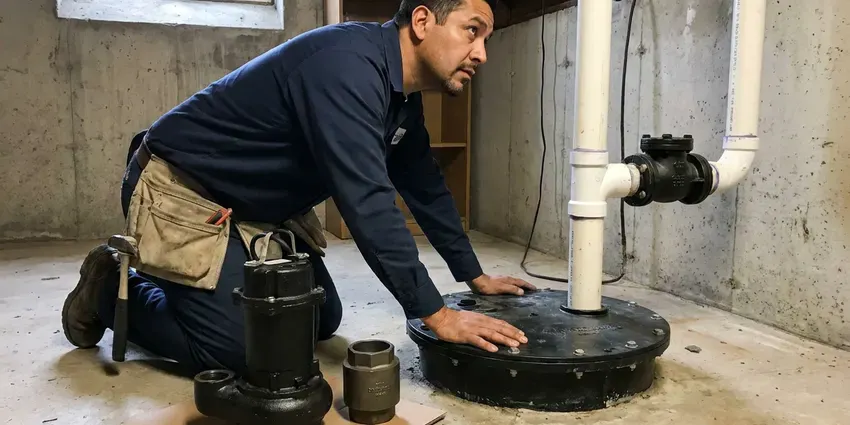

Sump Pump Installation in Casper, WY
Wet basement corner after every storm? JKV Plumbing installs sump pumps in Casper, WY that move the water out.
- Local Casper Crews
- Quick Pump Swaps
- Certified Plumbers
- Upfront Quotes

Need a Sump Pump Installed in Casper, WY?
Get it done ahead of the next storm, with a written estimate up front.
Sump Pump Replacement and New Installs in Casper, WY
JKV Plumbing installs sump pumps for basements, crawl spaces, window wells and low yards. Hillside homes take water from uphill. Low lots collect it from everywhere, and a slab with no pit has nowhere to send it until it shows up on the floor.
Our expertise includes:
- New pit cutting through concrete and hard soil
- Every common sump pump type
- Clean electrical hookups

Additional Plumbing Installation Services in Casper, WY
We install water heaters, pumps, lines, and fixtures across Casper, WY with careful, permitted work that passes inspection the first time.


Customers
Why Choose JKV Plumbing for Sump Pump Installation in Casper, WY?
Most failed sump pumps we pull were the wrong size from day one. An undersized pump on a tall lift runs constantly, overheats and quits in the middle of the night during the second heavy storm of the season. We size by the numbers instead.
- Proper Discharge, Discharge lines end well clear of the foundation and away from the neighbors.
- Code Compliance, Every install meets Wyoming plumbing code, with permits pulled when the job calls for one.
- Ground Knowledge, Wyoming soil and water table levels affect pit depth and pump size, and we account for both.
Citywide Coverage
Every neighborhood in Casper and the nearby towns has its own housing stock. Our crews have set pumps in fieldstone cellars, poured basements and crawl spaces all over the area.
Experienced Team
Each JKV Plumbing technician reads the drainage around the house first. That tells them where water is coming from.
Safety-First Approach
Before we leave, we inspect the full install. That includes the outlet, the lid seal and the discharge outlet.
Trusted Certified Casper Plumbing Services Professionals
At JKV Plumbing, we take pride in licensed, certified plumbing services throughout Casper, WY. Credentials matter in this trade. Every repair, install and maintenance visit follows strict safety and quality rules, and the plumbers doing the work carry recognized industry credentials.
Call Us Now PHCC Plumbing Contractor Recognition
PHCC Plumbing Contractor Recognition Better Business Bureau (BBB) Accreditation
Better Business Bureau (BBB) Accreditation Angi Certified Pro
Angi Certified Pro ISO 9001 Quality Management Certification
ISO 9001 Quality Management CertificationStorm-Ready Sump Pump Installation in Casper, WY
Crawl Space Sump Pump Installation in Casper, WY
Crawl spaces with standing water breed mold and rot sill plates within a few seasons. We set a basin at the lowest point, run perforated drain pipe to it where needed and seal the vapor barrier around the lid so the space stays dry. Access is often tight. We route the discharge out through the rim joist and away from the foundation.

Sump Pump Installation Cost in Casper, WY
Price depends mostly on whether a pit already exists. A swap in an existing pit is the low end. Backups add cost. We list each option on a written quote.
Commercial Sump Pump Solutions in Casper
Commercial basements, elevator pits and loading dock drains need pumps rated for more volume. For those jobs we install duplex systems where two pumps alternate, with a control panel and a high water alarm that can tie into the building monitoring. Downtime costs money. We plan the install around your business hours.
Primary Sump Pump Installation in Casper
A primary sump pump is the one doing the daily work, kicking on every time the float rises in the pit after rain or snowmelt. We size it from pit diameter and vertical lift. Most homes need 1/3 or 1/2 HP. We usually pair that with a 1-1/2 inch discharge line.
Liberty Pumps Installation in Casper, WY
Liberty builds quiet, well-made submersible pumps with good switch options. We install their 250 and 280 series often. Replacement switches are easy to get. A small weep hole in the discharge pipe keeps the pump from air locking.
Zoeller Sump Pump Installation in Casper, WY
Zoeller has built cast iron sump pumps for decades, and parts are easy to get. We install their M53 and M98 models often. They make matching backup units. We help you pick the model that fits the pit.
Pedestal Sump Pump Installation in Casper, WY
Pedestal pumps put the motor on a column above the pit, so the motor never sits in water. You can reach the motor and the switch without fishing anything out of the pit, which helps in a basement where the pit is shallow or tight. They are louder than submersibles. We set the float rod and the discharge so the pump cycles cleanly.

Combination Sump Pump System Installation in Casper, WY
Two pumps on one riser cover both kinds of failure, a dead motor and a dead outlet. The primary handles daily water. People with carpet downstairs buy these. We install them in homes where a flood would ruin flooring and drywall.
Sump Pump Installation Near Me in Casper, WY
Need sump pump installation near me before the next storm? Our local plumbers can usually get to you within a day, and they carry check valves, PVC fittings and the most common 1/3 and 1/2 HP pumps. Same-day installs are normal.
Storm runoff hits every Casper lot a little differently. We look at where water collects before we recommend anything. The quote comes after that.
JKV Plumbing at a Glance
- Licensed and insured plumbers serving Casper, WY
- Same-day appointments and 24/7 emergency response
- Clear written estimates, no hidden fees
- 4.9-star rated by 782+ Wyoming customers
Casper Map
Casper Information
- Population
- 58,720
- Area codes
- 307/406/435
- Service area
- Casper and towns within a 40 mile drive
- Nearby
- Douglas, Rawlins, Riverton, Gillette
Slow-draining ground holds storm water against the foundation for days, so a working pump and a clear discharge matter for low lots in Casper, WY.
Expert Services
Reach out to JKV Plumbing for honest, reliable plumbing from people who know the trade in Casper, WY.
Our Specialized Plumbing Services in Casper, WY
At JKV Plumbing, we handle the full list of plumbing services across Casper, WY. We go from leak detection all the way to full system installations, for homes and commercial buildings, and we do it quickly at a fair price. Take a look at our core services below:


What to Expect on a Sump Pump Install in Casper, WY
Every Casper, WY install follows the same three stages before we call it done.
Tell Us Where the Water Is
Call (307) 393-4049 and describe where water collects. We inspect it and suggest the right pump and backup.
Prepare the Pit
We clean the existing basin or saw the slab for a new one, then set it in washed gravel.
Install and Test
We set the pump, the check valve and the discharge. Then we run a full-pit test and walk you through it.
Frequently Asked Questions About Sump Pump Installation in Casper
A pump swap in an existing pit typically costs $600 to $1,500. A new pit with slab cutting and digging often runs $1,500 to $4,000, depending on how deep we go and what we hit. Battery backups add $500 to $1,500.
A submersible sits in the pit under water, so it runs quieter and takes no floor space. The pedestal type mounts the motor on a column above the water, which makes it easier to reach for service and usually cheaper to buy, though you will hear it. Either can do the job. The pit and the noise you can live with decide it.
Discharge should end at least ten feet from the foundation, on ground that slopes away. Most cities do not allow sump water in the sanitary sewer.
Most standard installs take three to six hours. A new pit can stretch it to a full day. Swaps go faster.
Swapping a pump in an existing pit takes about two to three hours. New pit installs can run all day.
Have it cleaned and inspected once a year, ideally before the rainy season. We check the float, clean the pit and test the discharge. Small fixes prevent big floods.
Plan on seven to ten years for a well-kept pump. A pump that cycles every few minutes through a wet spring wears out faster than one that runs a few times a month, and cheap switches fail first. We can check yours.
Strange noises, nonstop running and visible rust are the usual signs. A quick test before the rainy season catches most problems.
What Our Customers Say About Our Plumbing Experts

Carlos V.
Our house still had galvanized pipe, and upstairs the shower was a trickle. The crew repiped everything in PEX over three days and patched every drywall hole before they left. The pressure difference is night and day.
Repiping · Riverton, WY
Angela D.
Our sump pump quit during a storm and the water was an inch from the basement carpet. JKV Plumbing put in a new pump with a battery backup that same evening. We have had two heavy rains since. It kicked on both times.
Sump Pump · Gillette, WY
Kevin O.
Before buying our house I paid for a sewer camera inspection. JKV Plumbing found a belly in the line that held standing water about forty feet from the cleanout. We used the video to get the sellers to fix it before closing.
Sewer Camera Inspection · Torrington, WYRobert G.
The camera showed a full break in our clay sewer line near the street. JKV Plumbing replaced it with a trenchless pipe burst, so the only digging was two small pits in the yard. They let us watch the footage before and after.
Sewer Line Replacement · Douglas, WY
Mark T.
The floor drain in our office break room backed up every few weeks. The plumber ran a cable, then put a camera down and found roots at a joint about thirty feet out. Seeing it on the screen made the decision easy.
Drain Cleaning · Douglas, WYGreg S.
I manage a small strip center with six tenants. JKV Plumbing handles our annual backflow testing and fixed a recurring clog in the shared sewer line that had been backing into the nail salon. Their reports come in clean and on time.
Commercial Plumbing · Casper, WY